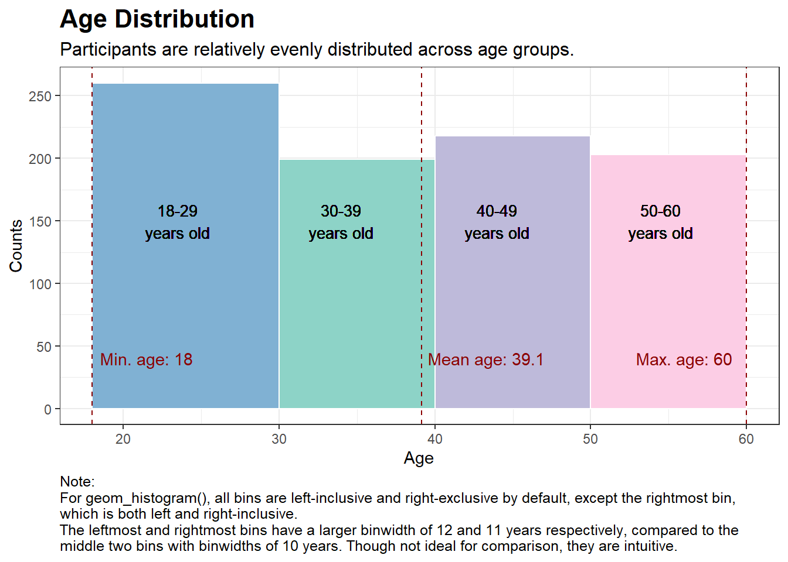
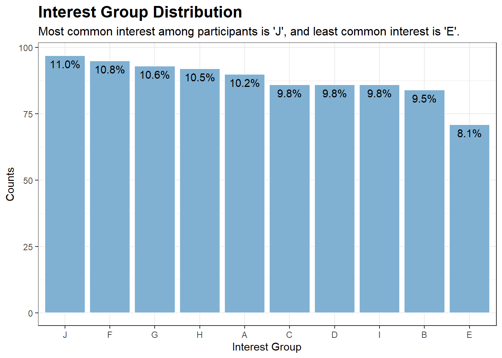
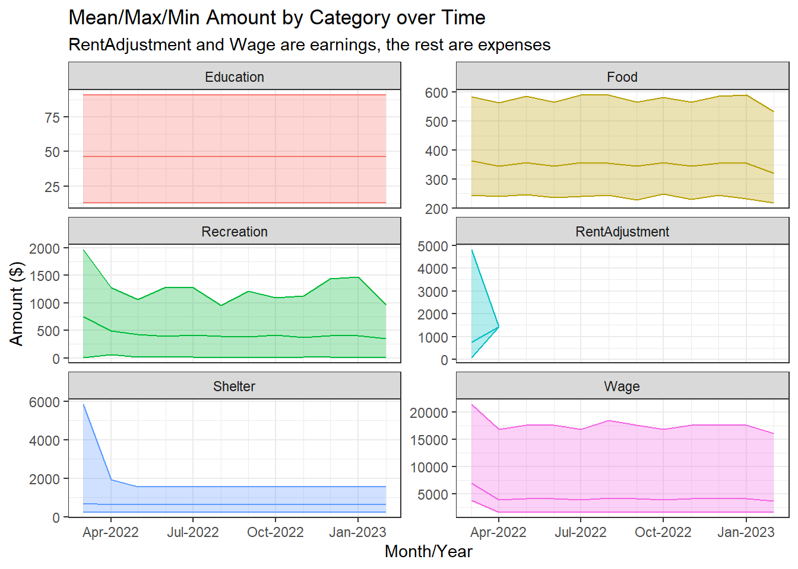
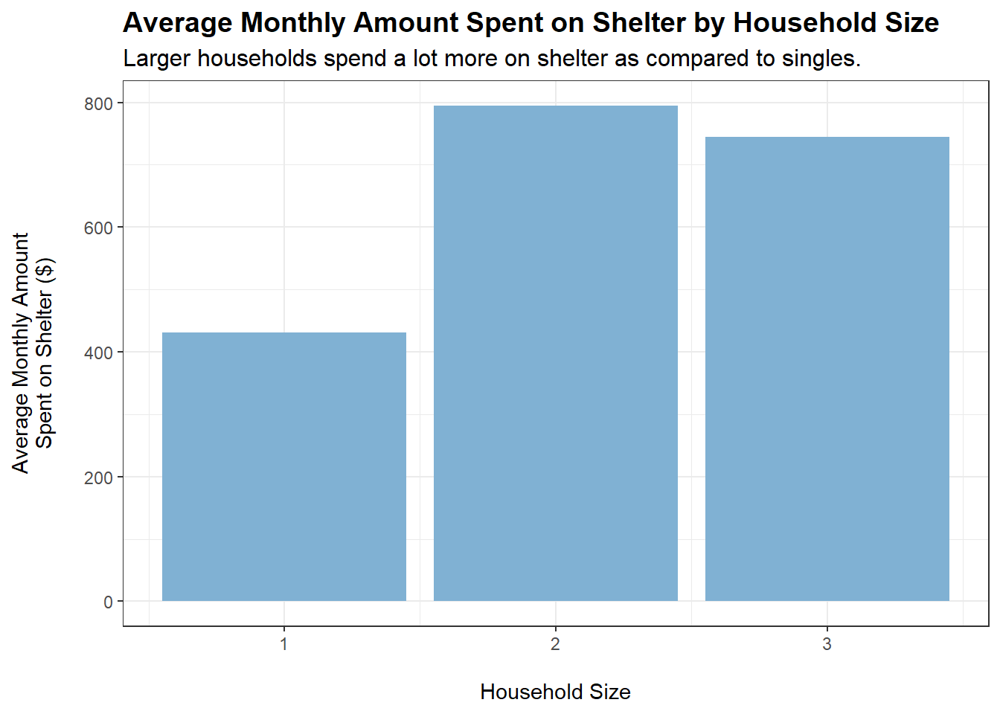

The City of Engagement, with a total population of 50,000, is a small city located in the Country of Nowhere. The city serves as a service centre of an agriculture region surrounding the city. The main agriculture of the region is fruit farms and vineyards. The local council of the city is in the process of preparing the Local Plan 2023. A sample survey of 1000 representative residents had been conducted to collect data related to their household demographic and spending patterns, among other things. The city aims to use the data to assist with their major community revitalization efforts, including how to allocate a very large city renewal grant they have recently received.
Data Preparation
There are two datasets for this exercise:
The first one contains various demographic information of survey participants (Participants.csv)
The second contains various financial transactions of survey participants (FinancialJournal.csv)
Data description (click to view)
Participants.csv
Contains information about the residents of City of Engagement that have agreed to participate in this study.
participantId (integer): unique ID assigned to each participant.
householdSize (integer): the number of people in the participant's household
haveKids (boolean): whether there are children living in the participant's household.
age (integer): participant's age in years at the start of the study.
educationLevel (string factor): the participant's education level, one of: {"Low", "HighSchoolOrCollege", "Bachelors", "Graduate"}
interestGroup (char): a char representing the participant's stated primary interest group, one of {"A", "B", "C", "D", "E", "F", "G", "H", "I", "J"}. Note: specific topics of interest have been redacted to avoid bias.
joviality (float): a value ranging from [0,1] indicating the participant's overall happiness level at the start of the study.
FinancialJournal.csv
Contains information about financial transactions.
participantId (integer): unique ID corresponding to the participant affected
timestamp (datetime): the time when the check-in was logged
category (string factor): a string describing the expense category, one of {"Education", "Food", "Recreation", "RentAdjustment", "Shelter", "Wage"}
amount (double): the amount of the transaction
While importing the datasets, we will also ensure that the variables are of the correct type (e.g. character, numeric, integer):
Load datasets
p <-read_csv("data/Participants.csv",col_types =cols("i", "i", "l", "i", "c", "c", "d"))if (any(is.na(p)) ==FALSE) {cat("Output:", "There are no missing values in Participants.csv", "\n")} else {cat("Output:", "There are missing values in Participants.csv", "\n")}p$educationLevel <- p$educationLevel %>%ordered(levels =c("Low","HighSchoolOrCollege","Bachelors","Graduate")) # order of factors may be meaningful, so use ordered()p_data <-distinct(p) # remove any possible duplicate rowsfin <-read_csv("data/FinancialJournal.csv",col_types =cols("i", "T", "c", "d"))if (any(is.na(fin)) ==FALSE) {cat("Output:", "There are no missing values in FinancialJournal.csv", "\n")} else {cat("Output:", "There are missing values in FinancialJournal.csv", "\n")}fin$category <- fin$category %>%factor(levels =c("Education","Food","Recreation","RentAdjustment","Shelter","Wage"))fin_data <-distinct(fin) # remove any possible duplicate rows
Output: There are no missing values in Participants.csv
Output: There are no missing values in FinancialJournal.csv
There were 0 (out of 1011) duplicate rows for Participants.csv and 1113 (out of 1513636) duplicate rows for FinancialJournal.csv. They have been removed.
Information about col_types
“i” is for integer, “c” is for character, “l” is for logical, “d” is for double, “T” is for datetime.
Before we move on, let’s check if the financial journal is complete for all participants:
counts <- fin_data %>%group_by(participantId) %>%summarise(n_obs =n())ggplot(counts, aes(x ="", y = n_obs)) +geom_boxplot(fill ="#80b1d3", outlier.shape =NA, width =0.5) +geom_jitter(width =0.2, height =0, alpha =0.5, color ="#FFA07A") +scale_y_continuous(expand =c(0.05, 0)) +labs(title ="Distribution of Financial Transactions per participantId",subtitle ="Some participants have rather low numbers of financial transactions\n(located at the bottom)",y ="No. of financial transactions",x ="") +theme_classic() +theme(axis.line.x =element_blank(),axis.text.x =element_blank(),axis.ticks.x =element_blank(),plot.title =element_text(face ="bold", size =16),plot.subtitle =element_text(size =12))
For the group of participants that have rather low numbers of financial transactions, it could be due to exogenous reasons (e.g., data entry error, left the city, gave up on the study halfway). As such, they will be removed for the purposes of this analysis:
new_fin_data <- counts %>%filter(n_obs >=500) %>%# filter out participants with low no. of transactionsinner_join(fin_data, by ="participantId") %>%# keep only relevant obs in fin_dataselect(!contains("n_obs")) # discard n_obs column
They will also be removed from the demographics dataset, since we are unsure if, for example, they have left the city for good.
new_p_data <- counts %>%filter(n_obs >=500) %>%inner_join(p_data, by ="participantId") %>%select(!contains("n_obs"))
Participants removed due to low number of check-ins in financial journal
A total of 131 participants, out of the original 1011, were dropped from our datasets.
Getting to Know Our Demographics Dataset
The City of Engagement has a population of 50,000. We have participants’ data with a sample size of 880, which should give us a decent representation of how the population looks like.
Firstly, let’s perform some basic visualisations so that we can get to know our data better. Basic insights are provided in the subtitle of each plot.
# Creating a data.frame containing the frequencies of householdSize in our dataset of 1,000 participantshs_counts <-data.frame(table(new_p_data$householdSize))colnames(hs_counts) <-c("householdSize", "Freq")# Adding a percentage variable based on the frequencieshs_counts$pct <-percent(hs_counts$Freq /sum(hs_counts$Freq))# Choosing some nice colors for the plotnice_colors <-c("#80b1d3", "#8dd3c7", "#bebada")# Plotting (using coord_polar creates a pie chart from a stacked bar chart)ggplot(hs_counts, aes(x ="", y = Freq, fill =factor(householdSize))) +geom_bar(stat ="identity", width =1, color ="white") +geom_text(aes(label = pct), position =position_stack(vjust =0.5)) +coord_polar("y", start =0) +labs(title ="Household Size Distribution",subtitle ="The most common household size is 1 and least common household size is 3.",fill ="Household Size") +theme_void() +scale_fill_manual(values = nice_colors, guide =guide_legend(reverse =TRUE)) +theme(plot.title =element_text(face ="bold", size =16),plot.subtitle =element_text(size =12))
Code
# Creating a data.frame containing the frequencies of haveKids in our dataset of 1,000 participantskids_counts <-data.frame(table(new_p_data$haveKids))colnames(kids_counts) <-c("haveKids", "Freq")# Adding a percentage variable based on the frequencieskids_counts$pct <-percent(kids_counts$Freq /sum(kids_counts$Freq))# Choosing some nice colors for the plotnice_colors <-c("#80b1d3", "#8dd3c7")# Plotting (using coord_polar creates a pie chart from a stacked bar chart)ggplot(kids_counts, aes(x ="", y = Freq, fill =factor(haveKids))) +geom_bar(stat ="identity", width =1, color ="white") +geom_text(aes(label = pct), position =position_stack(vjust =0.5)) +coord_polar("y", start =0) +labs(title ="Distribution of Whether Participants Have Kids",subtitle ="Most participants do not have kids. Only slightly less than a third have kids.",fill ="Do participants have kids?") +theme_void() +scale_fill_manual(values = nice_colors, guide =guide_legend(reverse =TRUE)) +theme(plot.title =element_text(face ="bold", size =16),plot.subtitle =element_text(size =12))
Code
# Calculate the mean, min, and max agemean_age <-mean(new_p_data$age)min_age <-min(new_p_data$age)max_age <-max(new_p_data$age)# Choosing some nice colors for the plotnice_colors <-c("#80b1d3", "#8dd3c7", "#bebada", "#fccde5")# Plottingggplot(new_p_data, aes(x = age)) +geom_histogram(breaks =c(18, 30, 40, 50, 60), fill = nice_colors, color ="white") +labs(title ="Age Distribution",subtitle ="Participants are relatively evenly distributed across age groups.",x ="Age",y ="Counts",caption ="Note:\nFor geom_histogram(), all bins are left-inclusive and right-exclusive by default, except the rightmost bin,\nwhich is both left and right-inclusive.\nThe leftmost and rightmost bins have a larger binwidth of 12 and 11 years respectively, compared to the\nmiddle two bins with binwidths of 10 years. Though not ideal for comparison, they are intuitive.") +theme_bw() +theme(plot.title =element_text(face ="bold", size =16),plot.subtitle =element_text(size =12),plot.caption =element_text(size =9.5, hjust =0)) +geom_vline(xintercept = mean_age, color ="darkred", linetype ="dashed") +geom_vline(xintercept = min_age, color ="darkred", linetype ="dashed") +geom_vline(xintercept = max_age, color ="darkred", linetype ="dashed") +annotate("text", x = mean_age +4.2, y =40, label =paste("Mean age:", round(mean_age, 1)), color ="darkred") +annotate("text", x = min_age +3.5, y =40, label =paste("Min. age:", round(min_age, 1)), color ="darkred") +annotate("text", x = max_age -4, y =40, label =paste("Max. age:", round(max_age, 1)), color ="darkred") +geom_text(aes(x =23.5, y =150, label ="18-29\nyears old"), size =3.5) +geom_text(aes(x =34, y =150, label ="30-39\nyears old"), size =3.5) +geom_text(aes(x =44, y =150, label ="40-49\nyears old"), size =3.5) +geom_text(aes(x =54.5, y =150, label ="50-60\nyears old"), size =3.5) +scale_y_continuous(breaks =breaks_width(50)) # this useful function is from the 'scales' package

Code
# Creating a data.frame containing the frequencies of educationLevel in our dataset of 1,000 participantsedu_counts <-data.frame(table(new_p_data$educationLevel))colnames(edu_counts) <-c("educationLevel", "Counts")# Adding a percentage variable based on the frequenciesedu_counts$pct <-percent(edu_counts$Counts /sum(edu_counts$Counts))# Choosing some nice colors for the plotnice_colors <-c("#80b1d3", "#8dd3c7", "#bebada", "#fccde5")# Plotggplot(edu_counts, aes(x = educationLevel, y = Counts)) +geom_bar(stat ="identity", fill = nice_colors, color ="white") +labs(title ="Education Level Distribution", x ="Education Level", y ="Counts",subtitle ="This city is rather well-educated.\n93.7% of participants have education higher than 'High School/College'.\n45.7% have education higher than Bachelor's degree.") +theme_bw() +theme(plot.title =element_text(face ="bold", size =16),plot.subtitle =element_text(size =12)) +geom_text(aes(label = pct), vjust =1.5)
Code
# Creating a data.frame containing the frequencies of interestGroup in our dataset of 1,000 participantsinterest_counts <-data.frame(table(new_p_data$interestGroup))colnames(interest_counts) <-c("interestGroup", "Counts")# Adding a percentage variable based on the frequenciesinterest_counts$pct <-percent(interest_counts$Counts /sum(interest_counts$Counts), accuracy =0.1)# Plotggplot(interest_counts, aes(x =reorder(interestGroup, -Counts), y = Counts)) +geom_bar(stat ="identity", fill ="#80b1d3", color ="white") +labs(title ="Interest Group Distribution", x ="Interest Group", y ="Counts",subtitle ="Most common interest among participants is 'J', and least common interest is 'E'.") +theme_bw() +theme(plot.title =element_text(face ="bold", size =16),plot.subtitle =element_text(size =12)) +geom_text(aes(label = pct), vjust =1.5)

Getting to Know Our Financial Journal Dataset
Let’s take a look at the length (no. of rows) of our new_fin_data, which is the financial journal for our 880 participants:
cat("Output:", "There are", nrow(new_fin_data), "rows", "in our dataset.", "\n")
Output: There are 1509897 rows in our dataset.
This is rather large and it is due to the fact that each participant can have multiple transactions across different categories. To make the dataset more manageable without losing our ability to conduct meaningful analysis, we could extract the Month-Year from timestamp column that records the date and time of each record in POSIXct format. After extracting the Month-Year (as month_year), we will sum the total transaction amounts by participantId, category, and month_year:
With this grouped dataset, we can clearly see the expenditure/income for each participant, category, and month-year.
cat("Output:", "There are", nrow(grouped_data), "rows", "in our new dataset.", "\n")
Output: There are 44208 rows in our new dataset.
This is a much smaller dataset, which is more manageable, while still providing insights at the monthly interval.
Let’s explore the Financial Journal data over time to see if there are any trends. We will do this by plotting the mean, maximum, and minimum total_amount earned/spent from all participants, grouped by category and month_year, over month_year.
Code
# Calculate the mean, minimum, and maximum total_amount over all participantId for each categorygrouped_data_summary <- grouped_data %>%group_by(category, month_year) %>%summarise(mean_total_amount =mean(abs(total_amount)),min_total_amount =min(abs(total_amount)),max_total_amount =max(abs(total_amount)))# Create a time series plot with mean, min, and max for each category using facetsggplot(grouped_data_summary, aes(x = month_year, y = mean_total_amount, color = category)) +geom_line() +geom_ribbon(aes(ymin = min_total_amount, ymax = max_total_amount, fill = category), alpha =0.3) +labs(x ="Month/Year", y ="Amount ($)",title ="Mean/Max/Min Amount by Category over Time",subtitle ="RentAdjustment and Wage are earnings, the rest are expenses") +scale_fill_discrete(name ="Category") +scale_color_discrete(name ="Category") +theme_bw() +facet_wrap(~category, nrow =3, scales ="free_y") +guides(color ="none", fill ="none") +scale_x_datetime(date_minor_breaks ="1 month", date_labels ="%b-%Y")

We can see that the mean, minimum, and maximum amounts for each category is relatively stable over time. The exceptions are:
Shelter and RentAdjustment experience ‘shocks’ on Mar-2022, and the effects linger for a month until Apr-2022, after which Shelter stabilises while RentAdjustment becomes zero.
Minor ‘shock’ for Wage on Mar-2022 as well.
High volatility for the maximum amount spent on Recreation over time. This makes sense as it is most likely spending on luxury items, as compared to the other expense categories, which are more like necessities (e.g., Education, Food, Shelter).
Since most of the time series are relatively stable, we can move on to conduct our analysis on aggregated data (aggregated over time). This removes one dimension from the analysis, making it less complicated.
Aggregating Financial Journal Data over Time and Merging Datasets
We will take the mean of total_amount over month_year to obtain mean monthly amounts earned/spent by each participant for each category. We will not include RentAdjustment as it seems like a one-off occurrence.
tmp <- merged_data %>%filter(category =="Education") %>%group_by(householdSize) %>%summarise(average_monthly_amount =mean(monthly_total_amount))tmpcat("\n", "Only those with householdSize = 3 spend on education, which makes sense since kids are present in households of size 3.", "\n")
# A tibble: 1 × 2
householdSize average_monthly_amount
<int> <dbl>
1 3 -46.2
Only those with householdSize = 3 spend on education, which makes sense since kids are present in households of size 3.
Code
tmp <- merged_data %>%filter(category =="Education") %>%group_by(haveKids) %>%summarise(average_monthly_amount =mean(monthly_total_amount))tmpcat("\n", "Only those who have kids will spend on education", "\n")
# A tibble: 1 × 2
haveKids average_monthly_amount
<lgl> <dbl>
1 TRUE -46.2
Only those who have kids will spend on education
Code
tmp <- merged_data %>%filter(category =="Education") %>%group_by(educationLevel) %>%summarise(average_monthly_amount =mean(monthly_total_amount))ggplot(tmp, aes(x = educationLevel, y =abs(average_monthly_amount))) +geom_bar(stat ="identity", fill ="#80b1d3") +labs(title ="Average Monthly Amount Spent on Education by Education Level",subtitle ="Graduates spend the most on education.",x ="\nEducation Level",y ="Average Monthly Amount\nSpent on Education ($)\n") +theme_bw() +theme(plot.title =element_text(face ="bold", size =14),plot.subtitle =element_text(size =12))
Conclusions:
Confirmed that only households with kids spend on education.
Graduates spend the most on education, though not by far.
Who Spends Most on Food?
The following plots show the monthly amount spent on Food when grouped by the respective variables:
tmp <- merged_data %>%filter(category =="Food") %>%group_by(householdSize) %>%summarise(average_monthly_amount =mean(monthly_total_amount))ggplot(tmp, aes(x = householdSize, y =abs(average_monthly_amount))) +geom_bar(stat ="identity", fill ="#80b1d3") +labs(title ="Average Monthly Amount Spent on Food by Household Size",subtitle ="Surprisingly, Household Size and Amount Spent on Food are not positively correlated",x ="\nHousehold Size",y ="Average Monthly Amount\nSpent on Food ($)\n") +theme_bw() +theme(plot.title =element_text(face ="bold", size =14),plot.subtitle =element_text(size =11.5))
Code
tmp <- merged_data %>%filter(category =="Food") %>%group_by(haveKids) %>%summarise(average_monthly_amount =mean(monthly_total_amount))ggplot(tmp, aes(x = haveKids, y =abs(average_monthly_amount))) +geom_bar(stat ="identity", fill ="#80b1d3") +labs(title ="Average Monthly Amount Spent on Food by Presence of Kids",subtitle ="Presence of kids does not affect amount spent on food",x ="\nParticipants have kids?",y ="Average Monthly Amount\nSpent on Food ($)\n") +theme_bw() +theme(plot.title =element_text(face ="bold", size =14),plot.subtitle =element_text(size =12))
Code
merged_data$ageGroup <-cut(merged_data$age,breaks =c(0, 29, 39, 49, Inf),labels =c("18-29", "30-39", "40-49", "50-60"))tmp <- merged_data %>%filter(category =="Food") %>%group_by(ageGroup) %>%summarise(average_monthly_amount =mean(monthly_total_amount))ggplot(tmp, aes(x = ageGroup, y =abs(average_monthly_amount))) +geom_bar(stat ="identity", fill ="#80b1d3") +labs(title ="Average Monthly Amount Spent on Food by Age Group",subtitle ="Age does not seem to affect amount spent on food.",x ="\nAge Group",y ="Average Monthly Amount\nSpent on Food ($)\n") +theme_bw() +theme(plot.title =element_text(face ="bold", size =14),plot.subtitle =element_text(size =12))
Code
tmp <- merged_data %>%filter(category =="Food") %>%group_by(educationLevel) %>%summarise(average_monthly_amount =mean(monthly_total_amount))ggplot(tmp, aes(x = educationLevel, y =abs(average_monthly_amount))) +geom_bar(stat ="identity", fill ="#80b1d3") +labs(title ="Average Monthly Amount Spent on Food by Education Level",subtitle ="Slight positive correlation between education level and amount spent on food.",x ="\nEducation Level",y ="Average Monthly Amount\nSpent on Food ($)\n") +theme_bw() +theme(plot.title =element_text(face ="bold", size =14),plot.subtitle =element_text(size =12))
Code
tmp <- merged_data %>%filter(category =="Food") %>%group_by(educationLevel) %>%summarise(average_monthly_amount =mean(monthly_total_amount))ggplot(tmp, aes(x = educationLevel, y =abs(average_monthly_amount))) +geom_bar(stat ="identity", fill ="#80b1d3") +labs(title ="Average Monthly Amount Spent on Food by Education Level",subtitle ="Slight positive correlation between education level and amount spent on food.",x ="\nEducation Level",y ="Average Monthly Amount\nSpent on Food ($)\n") +theme_bw() +theme(plot.title =element_text(face ="bold", size =14),plot.subtitle =element_text(size =12))
Conclusions:
householdSize and haveKids do not appear to affect how much is spent monthly on food, which is quite puzzling. Could it be the case that household members eat less to accommodate a larger family?
educationLevel shows a slight positive correlation with amount spent monthly on food (based on the plot). However, a caveat is that educationLevel may also be positively correlated with wage. This will be explored further later on.
Who Spends Most on Recreation?
The following plots show the monthly amount spent on Recreation when grouped by the respective variables:
tmp <- merged_data %>%filter(category =="Recreation") %>%group_by(householdSize) %>%summarise(average_monthly_amount =mean(monthly_total_amount))ggplot(tmp, aes(x = householdSize, y =abs(average_monthly_amount))) +geom_bar(stat ="identity", fill ="#80b1d3") +labs(title ="Average Monthly Amount Spent on Recreation by Household Size",subtitle ="Slight increase in spending on recreation when household size increases",x ="\nHousehold Size",y ="Average Monthly Amount\nSpent on Recreation ($)\n") +theme_bw() +theme(plot.title =element_text(face ="bold", size =14),plot.subtitle =element_text(size =12))
Code
tmp <- merged_data %>%filter(category =="Recreation") %>%group_by(haveKids) %>%summarise(average_monthly_amount =mean(monthly_total_amount))ggplot(tmp, aes(x = haveKids, y =abs(average_monthly_amount))) +geom_bar(stat ="identity", fill ="#80b1d3") +labs(title ="Average Monthly Amount Spent on Recreation by Presence of Kids",subtitle ="Slight increase in spending on recreation when participants have kids.",x ="\nParticipants have kids?",y ="Average Monthly Amount\nSpent on Recreation ($)\n") +theme_bw() +theme(plot.title =element_text(face ="bold", size =14),plot.subtitle =element_text(size =12))
Code
tmp <- merged_data %>%filter(category =="Recreation") %>%group_by(ageGroup) %>%summarise(average_monthly_amount =mean(monthly_total_amount))ggplot(tmp, aes(x = ageGroup, y =abs(average_monthly_amount))) +geom_bar(stat ="identity", fill ="#80b1d3") +labs(title ="Average Monthly Amount Spent on Recreation by Age Group",subtitle ="Roughly equal spending on recreation across age groups.",x ="\nAge Group",y ="Average Monthly Amount\nSpent on Recreation ($)\n") +theme_bw() +theme(plot.title =element_text(face ="bold", size =14),plot.subtitle =element_text(size =12))
Code
tmp <- merged_data %>%filter(category =="Recreation") %>%group_by(educationLevel) %>%summarise(average_monthly_amount =mean(monthly_total_amount))ggplot(tmp, aes(x = educationLevel, y =abs(average_monthly_amount))) +geom_bar(stat ="identity", fill ="#80b1d3") +labs(title ="Average Monthly Amount Spent on Recreation by Education Level",subtitle ="Roughly equal spending on recreation across education levels.",x ="\nEducation Level",y ="Average Monthly Amount\nSpent on Recreation ($)\n") +theme_bw() +theme(plot.title =element_text(face ="bold", size =14),plot.subtitle =element_text(size =12))
Code
tmp <- merged_data %>%filter(category =="Recreation") %>%group_by(interestGroup) %>%summarise(average_monthly_amount =mean(monthly_total_amount))ggplot(tmp, aes(x =reorder(interestGroup, -abs(average_monthly_amount)), y =abs(average_monthly_amount))) +geom_bar(stat ="identity", fill ="#80b1d3") +labs(title ="Average Monthly Amount Spent on Recreation by Interest Group",subtitle ="Slight differences in spending on recreation across interest groups.\nCould some interest groups be more expensive than the others?",x ="\nInterest Group",y ="Average Monthly Amount\nSpent on Recreation ($)\n") +theme_bw() +theme(plot.title =element_text(face ="bold", size =14),plot.subtitle =element_text(size =12))
Conclusions:
Slight increases in spending on recreation when householdSize increases and when haveKids is true.
Some interest groups may cost more than the others. However, it is difficult to ascertain, based on the data, whether spending on recreation equates to spending on interest groups.
Who Spends Most on Shelter?
The following plots show the monthly amount spent on Shelter when grouped by the respective variables:
tmp <- merged_data %>%filter(category =="Shelter") %>%group_by(householdSize) %>%summarise(average_monthly_amount =mean(monthly_total_amount))ggplot(tmp, aes(x = householdSize, y =abs(average_monthly_amount))) +geom_bar(stat ="identity", fill ="#80b1d3") +labs(title ="Average Monthly Amount Spent on Shelter by Household Size",subtitle ="Larger households spend a lot more on shelter as compared to singles.",x ="\nHousehold Size",y ="Average Monthly Amount\nSpent on Shelter ($)\n") +theme_bw() +theme(plot.title =element_text(face ="bold", size =14),plot.subtitle =element_text(size =12))
Code
tmp <- merged_data %>%filter(category =="Shelter") %>%group_by(haveKids) %>%summarise(average_monthly_amount =mean(monthly_total_amount))ggplot(tmp, aes(x = haveKids, y =abs(average_monthly_amount))) +geom_bar(stat ="identity", fill ="#80b1d3") +labs(title ="Average Monthly Amount Spent on Shelter by Presence of Kids",subtitle ="Participants who have kids spend more on shelter.",x ="\nParticipants have kids?",y ="Average Monthly Amount\nSpent on Shelter ($)\n") +theme_bw() +theme(plot.title =element_text(face ="bold", size =14),plot.subtitle =element_text(size =12))
Code
tmp <- merged_data %>%filter(category =="Shelter") %>%group_by(ageGroup) %>%summarise(average_monthly_amount =mean(monthly_total_amount))ggplot(tmp, aes(x = ageGroup, y =abs(average_monthly_amount))) +geom_bar(stat ="identity", fill ="#80b1d3") +labs(title ="Average Monthly Amount Spent on Shelter by Age Group",subtitle ="Roughly equal spending on shelter across age groups.",x ="\nAge Group",y ="Average Monthly Amount\nSpent on Shelter ($)\n") +theme_bw() +theme(plot.title =element_text(face ="bold", size =14),plot.subtitle =element_text(size =12))

Code
tmp <- merged_data %>%filter(category =="Shelter") %>%group_by(educationLevel) %>%summarise(average_monthly_amount =mean(monthly_total_amount))ggplot(tmp, aes(x = educationLevel, y =abs(average_monthly_amount))) +geom_bar(stat ="identity", fill ="#80b1d3") +labs(title ="Average Monthly Amount Spent on Shelter by Education Level",subtitle ="Spending on shelter increases as education level increases.",x ="\nEducation Level",y ="Average Monthly Amount\nSpent on Shelter ($)\n") +theme_bw() +theme(plot.title =element_text(face ="bold", size =14),plot.subtitle =element_text(size =12))
Conclusions:
Both householdSize > 1 and haveKids = TRUE lead to an observed increase in spending on shelter. This makes sense, as a larger household requires more living space.
educationLevel shows a positive correlation with amount spent monthly on shelter (based on the plot, similar to the case for food). However, a caveat is that educationLevel may also be positively correlated with wage. This will be explored further later on.
Who Earns Most?
Based on our previous plots for spending on food and shelter across education levels, there are slight observed positive correlations. However, we cannot be sure if wages earned is also correlated. If that is the case, then we cannot attribute the correlation with certainty to either variable.
In this section, we will explore which demographics earn the most in terms of wages.
Participants earn more in wages when householdSize increases and when they have kids. Could it be that they work harder when they have a family?
Wages do not increase when participants’ age increases. This is rather surprising and seems to suggest that jobs in this city (perhaps due to their agricultural nature) do not come with increments over time, and that having more experience does not command higher wages.
Wages increase as education level of participants increases.
Increased Spending on Food and Shelter: Due to Wage or Education?
We noted earlier that education level was positively correlated with spending on food and shelter. But education level is also positively correlated with wages.
To have better clarity on the relationship between the four variables, we will perform two multiple linear regressions. We will skip the usual checks for a linear regression model as we just want to obtain some quick insights.
# Prepare the variables and merge into a dataframewage <- merged_data %>%filter(category =="Wage") %>%select(participantId, monthly_wage = monthly_total_amount)food <- merged_data %>%filter(category =="Food") %>%select(participantId, monthly_food = monthly_total_amount)shelter <- merged_data %>%filter(category =="Shelter") %>%select(participantId, monthly_shelter = monthly_total_amount)education <- merged_data %>%select(participantId, educationLevel) %>%distinct()lm_df <-inner_join(wage, food, by ="participantId") %>%inner_join(shelter, by ="participantId") %>%inner_join(education, by ="participantId")
model <-lm(monthly_food ~ monthly_wage + educationLevel,data = lm_df)summary(model)
Call:
lm(formula = monthly_food ~ monthly_wage + educationLevel, data = lm_df)
Residuals:
Min 1Q Median 3Q Max
-211.99 -65.51 22.07 62.78 140.72
Coefficients:
Estimate Std. Error t value Pr(>|t|)
(Intercept) -4.026e+02 6.559e+00 -61.382 < 2e-16 ***
monthly_wage 1.240e-02 1.312e-03 9.449 < 2e-16 ***
educationLevel.L -5.220e+01 8.643e+00 -6.039 2.29e-09 ***
educationLevel.Q -4.486e+00 6.517e+00 -0.688 0.491
educationLevel.C 2.411e+00 4.864e+00 0.496 0.620
---
Signif. codes: 0 '***' 0.001 '**' 0.01 '*' 0.05 '.' 0.1 ' ' 1
Residual standard error: 74.55 on 875 degrees of freedom
Multiple R-squared: 0.09867, Adjusted R-squared: 0.09455
F-statistic: 23.95 on 4 and 875 DF, p-value: < 2.2e-16
model <-lm(monthly_shelter ~ monthly_wage + educationLevel,data = lm_df)summary(model)
Call:
lm(formula = monthly_shelter ~ monthly_wage + educationLevel,
data = lm_df)
Residuals:
Min 1Q Median 3Q Max
-877.5 -140.5 -18.6 192.4 416.4
Coefficients:
Estimate Std. Error t value Pr(>|t|)
(Intercept) -6.684e+02 1.836e+01 -36.412 < 2e-16 ***
monthly_wage 8.191e-03 3.672e-03 2.230 0.026 *
educationLevel.L -1.347e+02 2.419e+01 -5.567 3.45e-08 ***
educationLevel.Q 1.845e+01 1.824e+01 1.012 0.312
educationLevel.C 7.354e+00 1.361e+01 0.540 0.589
---
Signif. codes: 0 '***' 0.001 '**' 0.01 '*' 0.05 '.' 0.1 ' ' 1
Residual standard error: 208.6 on 875 degrees of freedom
Multiple R-squared: 0.0425, Adjusted R-squared: 0.03812
F-statistic: 9.71 on 4 and 875 DF, p-value: 1.097e-07
Based on the output of the models, while the coefficients on monthly_wage are statistically significant at the 5% level (indicated by at least a * next to the p-values), the multiple R-squared is very low, at less than 10% for both models. This means that less than 10% of the variance in monthly_food and monthly_shelter are explained by the regression models. There are likely to be some omitted variables that, when included, would help explain the variance in the dependent variables better.
On the other hand, when a linear regression of monthly_wage on educationLevel is performed:
model <-lm(monthly_wage ~ educationLevel,data = lm_df)summary(model)
Call:
lm(formula = monthly_wage ~ educationLevel, data = lm_df)
Residuals:
Min 1Q Median 3Q Max
-4291.7 -1116.8 -396.6 645.2 12521.2
Coefficients:
Estimate Std. Error t value Pr(>|t|)
(Intercept) 4341.49 83.69 51.874 < 2e-16 ***
educationLevel.L 2798.39 201.46 13.890 < 2e-16 ***
educationLevel.Q 346.57 167.39 2.071 0.038697 *
educationLevel.C -454.35 124.29 -3.656 0.000272 ***
---
Signif. codes: 0 '***' 0.001 '**' 0.01 '*' 0.05 '.' 0.1 ' ' 1
Residual standard error: 1919 on 876 degrees of freedom
Multiple R-squared: 0.3076, Adjusted R-squared: 0.3053
F-statistic: 129.7 on 3 and 876 DF, p-value: < 2.2e-16
A single explanatory variable in this model already achieved an adjusted R-squared of 30.5%. This implies that 30.5% of the variation in monthly wage is explained by variations in education level.
However, the model does fail the usual checks, such as this one for normality of residuals:
check_normality(model) %>%plot()
This is likely because of the fact that we are using a discrete explanatory variable, educationLevel, with only 4 levels. Hence, the results of these linear regression models should be taken with a pinch of salt.
Does Higher Wage Equate More Happiness?
There is still one more variable that we have yet to explore - joviality in the demographics dataset.
Lastly, we will check whether higher wages lead to more happiness.